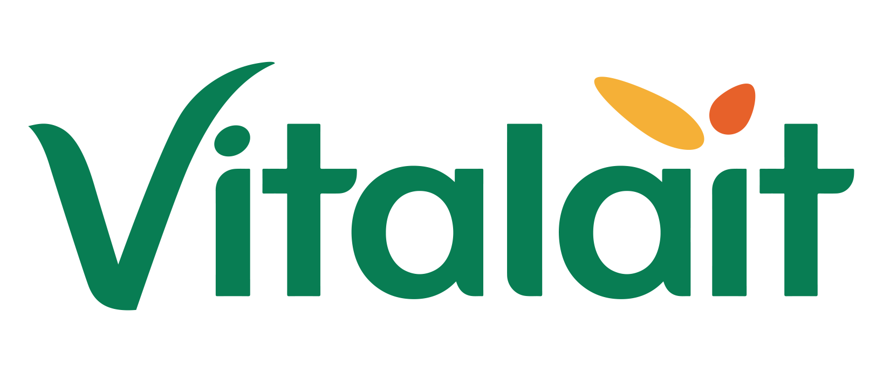
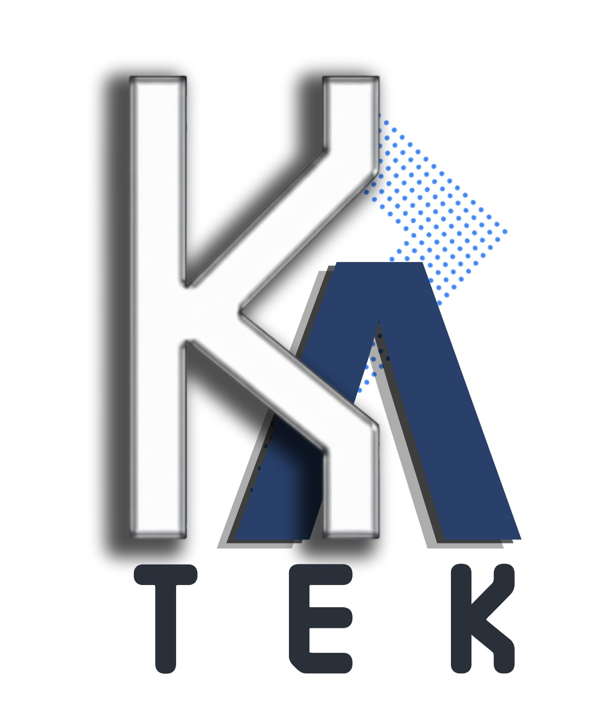

Centre de formation À la une
Ouvrez Microsoft Word, créez un nouveau document vide, puis suivez les consignes ci-dessous. Ces exercices ne sont pas notés et ne changent pas le résultat du quiz en ligne : ils servent à manipuler le logiciel.
Centre de formation À la une — Formateur : Kabil Mbarki (KaTEK).
L’image ci-dessous imite un document Word. Réalisez le même rendu dans Word (titres, sous-titre, texte, tableau, image, couleurs de mise en forme).
Rapport de formation — Qualité
Équipe Vitalait • Session Word
| Outil | Usage | Onglet principal |
|---|---|---|
| Tableau | Présenter des infos en lignes / colonnes | Insertion |
| Image | Illustrer le document | Insertion |
Check-list (à cocher pour vous-même)
Même principe : nouveau document Word. Ici, seules les consignes comptent — le rendu exact est libre tant que les exigences sont respectées. Correction par le formateur.